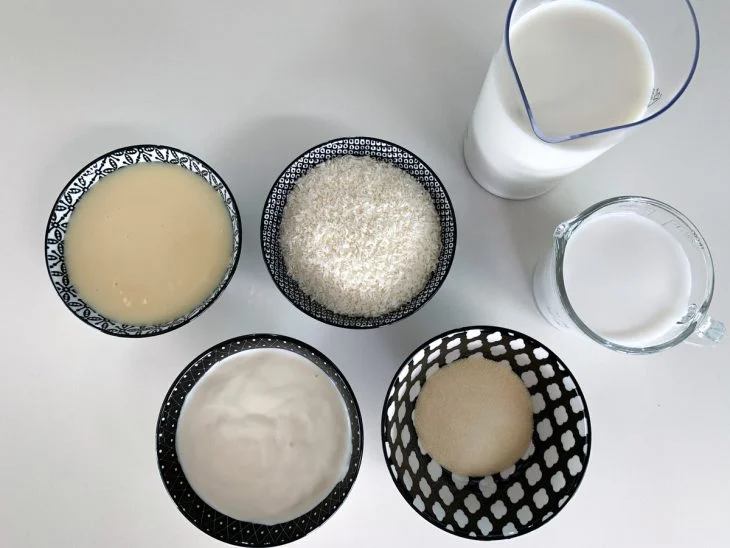

Pudim
Ingredientes
Pudim
- Leite Condensado
- 2 medidas de Leite (790 ml)
- 3 ovos
Calda
- 1 xícara (chá) de açúcar
- meia xícara (chá) de água quente
Modo de preparo
Pudim
- Em um liquidificador, bata todos os ingredientes do pudim e despeje na forma reservada.
- Cubra com papel-alumínio e leve ao forno médio (180°C), em banho-maria, por cerca de 1 hora e 30 minutos.
- Depois de frio, leve para gelar por cerca de 6 horas.
- Desenforme e sirva a seguir.
Calda
- Em uma panela de fundo largo, derreta o açúcar até ficar dourado.
- Junte a água quente e mexa com uma colher.
- Deixe ferver até dissolver os torrões de açúcar e a calda engrossar.
- Forre com a calda uma forma com furo central (19 cm de diâmetro) e reserve.